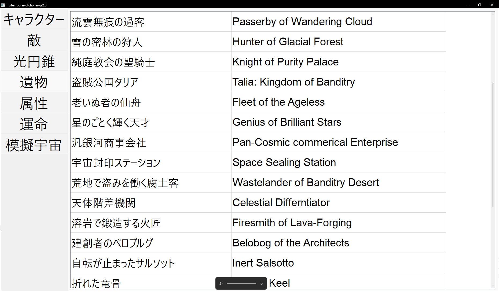
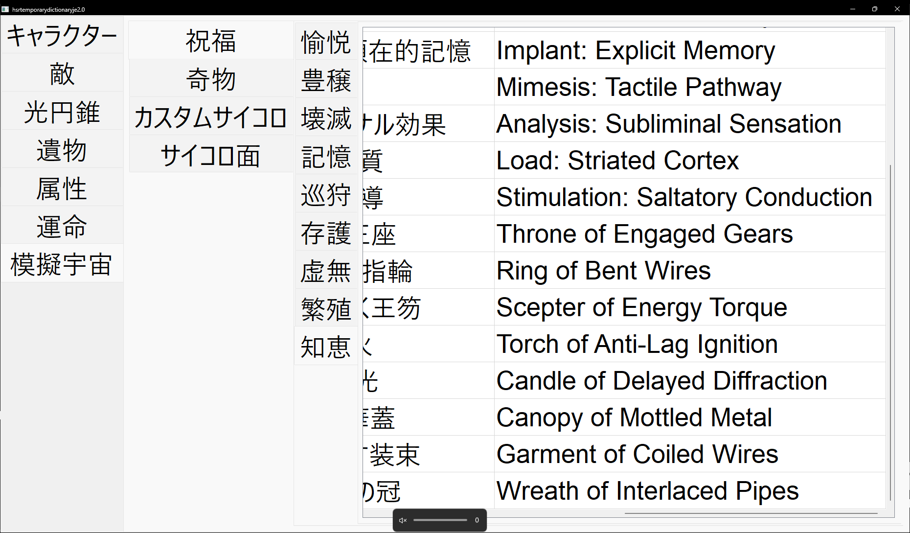
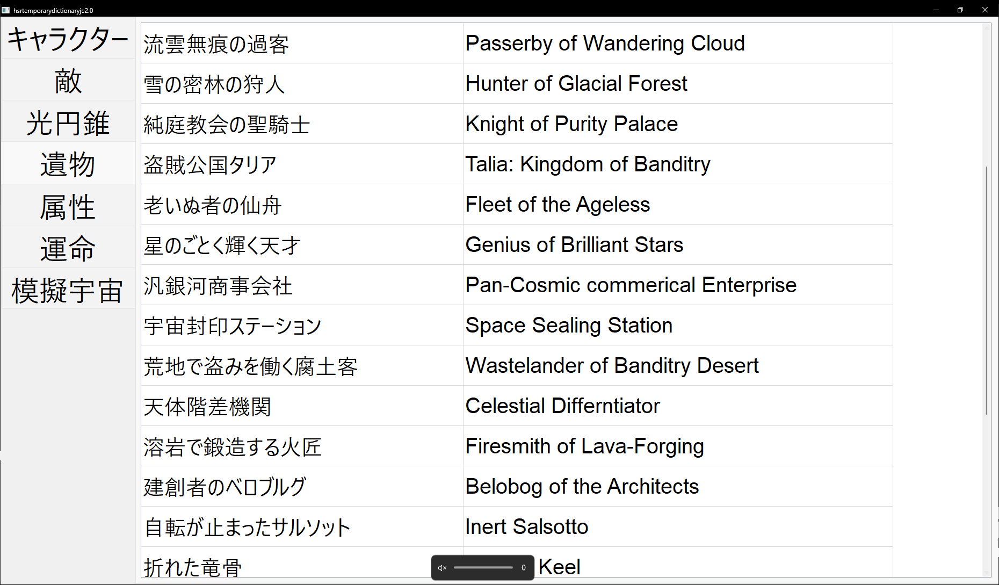
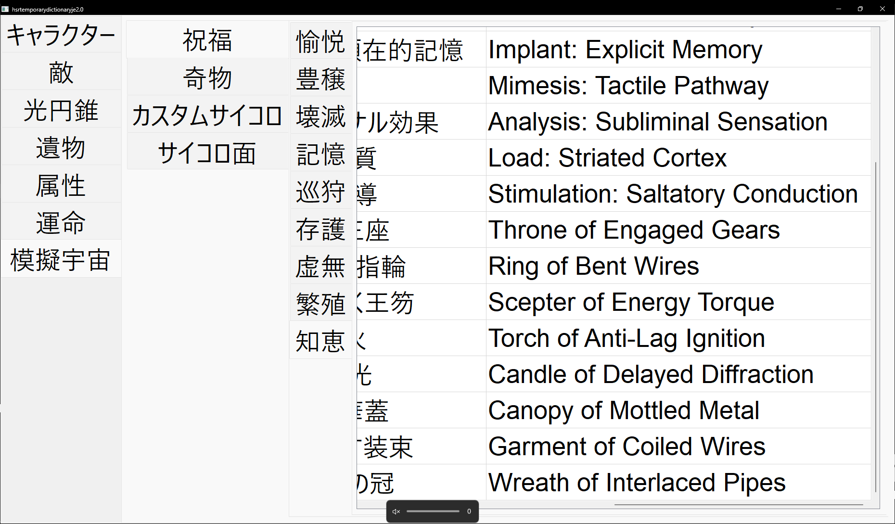

作成: 2025-05-19 21:46
2024年2月に12時間位で制作した崩壊：スターレイルというゲームの簡易的な和英辞書です。ここからアクセスできるgithubリポジトリのdistファイル内にあるmain.exeを実行すれば動くはずです。ライセンスはLGPL3.0です。
左の上位タブから見たい項目を探してください。戦闘面について、英語で検索したいときに使うのを想定して作ったので、多分ない言葉もたくさんあると思いますが、戦略とか攻略を調べるには事足ると思います。簡易的な解説を以下に記します。
キャラクタータブには、プレイアブルキャラクター(と現時点で未実装であるが実装予定である黄泉、アベンチュリン、ギャラガー)が表示されます。開拓者は壊滅/存護の区別をしていません。並びは逆hoyowiki順(おそらく実装順)になっています。
敵タブには、現時点で戦える敵が表示されます。カフカ、ブローニャなどのプレイアブルキャラクターであるが敵にもなるキャラクターも表示されます。並びは逆hoyowiki順(おそらく実装順)です。
光円錐タブには、現時点で利用可能もしくは今後利用可能になるであろう光円錐が表示されます。並びは逆hoyowiki順(おそらく実装順)です。
遺物タブには、現時点で利用可能な遺物が表示されます。並びは逆hoyowiki順(おそらく実装順？)です。
属性タブには、プレイアブルキャラクターに1つ付与される属性が表示されます。
運命タブには、プレイアブルキャラクターに1つ付与される運命、模擬宇宙で選択可能な運命、そうではないがhsrfandomwikiにて言及されている運命がこの記述順で表示されます。
模擬宇宙タブには、模擬宇宙に関連する祝福、奇物、(黄金と機械の)カスタムサイコロ、サイコロ面のタブが表示されます。 祝福タブには、それぞれの運命のタブが表示され、見たい運命を選択すると逆hoyowiki順(レアリティ順)に祝福が表示されます。 奇物タブには、奇物が逆hoyowiki順で表示されます。 カスタムサイコロタブでは、カスタムサイコロとして選択可能であるもしくはある程度模擬宇宙:黄金と機械を進めると選択可能になるカスタムサイコロの一覧を見ることができます。 サイコロ面タブでは、サイコロ面として選択可能であるもしくはある程度模擬宇宙:黄金と機械を進めると選択可能になるサイコロ面の一覧を見ることができます。
実際に実行して見ることができるシーンのスクリーンショットを3枚添付します。
  
 
最終更新: 2025-07-28 02:41